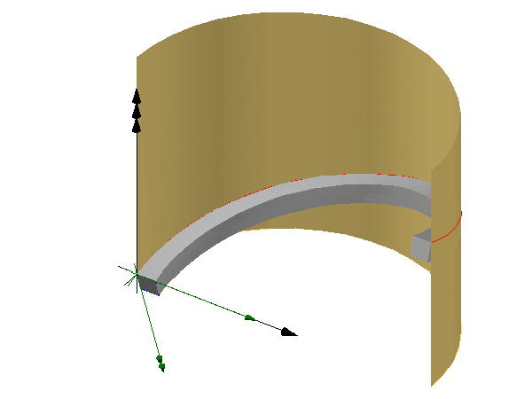

8.8.3.32 IfcSurfaceCurveSweptAreaSolid
| Festkörper - Entlang einer auf einer Referenzfläche liegenden Leitlinie extrudiert |
The IfcSurfaceCurveSweptAreaSolid is the result of sweeping an area along a directrix that lies on a
reference surface. The swept area is provided by a subtype of IfcProfileDef. The profile is placed
by an implicit cartesian transformation operator at the start point of the sweep, where the profile normal agrees
to the tangent of the directrix at this point, and the profile's x-axis agrees to the surface normal. At any point
along the directrix, the swept profile origin lies on the directrix, the profile's normal points towards the tangent
of the directrix, and the profile's x-axis is identical to the surface normal at this point.
NOTE The profile area's normal has to be identical to the tangent of the directrix at any given point. In case
of a directrix having a linear segment at the start point, the segment has to be perpendicular to the profile at start.
The Directrix and the ReferenceSurface are positioned within the object coordinate system. The start
of the sweeping operation is at the StartParam, the parameter value is provided based on the curve parameterization.
If no StartParam is provided the start defaults to the begin of the directrix. The end of the sweeping operation is
at the EndParam, the parameter value is provided based on the curve parameterization. If no EndParam is provided
the end defaults to the end of the directrix. The geometric shape of the solid is not dependent upon the curve parameterization;
the volume depends upon the area swept and the length of the Directrix.
NOTE The StartParam and the EndParam are not normalized by default, they depend
upon the parameterization of the curve. However using the IfcReparametrisedCompositeCurveSegment within an
IfcCompositeCurve as the directrix allows to explicitly reparameterize the underlying sweeping curve. In case of a closed curve, such as IfcCircle or IfcEllipse, as the directrix, StartParam and the EndParam shall
not exceed the parametic range, they shall not be > 360°.
EXAMPLE The reference surface is any surface (plane, cylindric, composite) situated in 3D space and positioned in the object
coordinate system. In most cases, it is a plane or a surface of extrusion. The directrix lies on the surface, in case of a plane it might
be defined as a polyline or composite curve, in case of a cylindrical or other non-planer reference surface it might often be defined as a
p-curve on this reference surface.
At any point of the directrix, a plane can be constructed. The origin of the position coordinate system of the implicit plane
lies at the directrix. The Axis3 (the z-axis, or normal) of the position coordinate system is identical to the tangent of the directrix
at this point, the Axis1 (the x axis, or u) of the position coordinate system is identical to the normal of the reference surface at
this point. The Axis2 (the y axis, or v) is constructed.
The resulting body of the swept solid is not repositioned if the inherited Position attribute is omitted. Otherwise the coordinate system
established by the Position attribute is used to reposition the body relative to the object coordinate system.
 |
EXAMPLE Figure 306 illustrates an example using a cylindrical reference surface and a p-curve for sweeping a rectangle. The Postion is not provided and therefore it does not reposition the resulting swept solid. Figure 307 shows the expected result.
NOTE The start of the directrix lies at the origin of the object coordinate system, as shown in the illustration,
only by coincidence. The start of the directrix and thereby the start of the sweeping operation might be at any point within the object coordinate
system and only depends on the position of the directrix. |
|
Figure 306 — Surface curve wept area solid parameter
|
|
 |
|
Figure 307 — Surface curve wept area solid results
|
NOTE Definition according to ISO/CD 10303-42:1992
A surface curve swept area solid is a type of swept area solid which is the result of sweeping a face along a
Directrix lying on a ReferenceSurface. The orientation of the SweptArea is related to the
direction of the surface normal.
The SweptArea is required to be a curve bounded surface lying in the plane z = 0 and this is swept along the
Directrix in such a way that the origin of the local coordinate system used to define the SweptArea
is on the Directrix and the local x-axis is in the direction of the normal to the ReferenceSurface at
the current point. The resulting solid has the property that the cross section of the surface by the normal plane to
the Directrix at any point is a copy of the SweptArea.
The orientation of the SweptArea as it sweeps along the Directrix is precisely defined by a Cartesian
Transformation Operator 3D with attributes:
- Local origin as point (0., 0., 0),
- Axis 1 as the normal N to the reference surface at the point of the directrix with
parameter u.
- Axis 3 as the direction of the tangent vector t at the point of the directrix with
parameter u.
The remaining attributes are defaulted to define a corresponding transformation matrix T(u), which varies with the
directrix parameter u.
NOTE Entity adapted from surface_curve_swept_area_solid defined
in ISO 10303-42.
HISTORY New entity in IFC2x2.
Informal Propositions:
- The SweptArea shall lie in the implicit plane z = 0.
- The Directrix shall lie on the ReferenceSurface.
XSD Specification:
<xs:element name="IfcSurfaceCurveSweptAreaSolid" type="ifc:IfcSurfaceCurveSweptAreaSolid" substitutionGroup="ifc:IfcSweptAreaSolid" nillable="true"/>
<xs:complexType name="IfcSurfaceCurveSweptAreaSolid">
<xs:complexContent>
<xs:extension base="ifc:IfcSweptAreaSolid">
<xs:sequence>
<xs:element name="Directrix" type="ifc:IfcCurve" nillable="true"/>
<xs:element name="ReferenceSurface" type="ifc:IfcSurface" nillable="true"/>
</xs:sequence>
<xs:attribute name="StartParam" type="ifc:IfcParameterValue" use="optional"/>
<xs:attribute name="EndParam" type="ifc:IfcParameterValue" use="optional"/>
</xs:extension>
</xs:complexContent>
</xs:complexType>
EXPRESS Specification:
|
ENTITY IfcSurfaceCurveSweptAreaSolid
|
|
|
| DirectrixBounded | : | (EXISTS(StartParam) AND EXISTS(EndParam)) OR
(SIZEOF(['IFCGEOMETRYRESOURCE.IFCCONIC', 'IFCGEOMETRYRESOURCE.IFCBOUNDEDCURVE'] * TYPEOF(Directrix)) = 1); |
|
 EXPRESS-G diagram
EXPRESS-G diagram
Attribute Definitions:
| Directrix | : |
The curve used to define the sweeping operation. The solid is generated by sweeping the SELF\IfcSweptAreaSolid.SweptArea along the Directrix.
|
| StartParam | : |
The parameter value on the Directrix at which the sweeping operation commences. If no value is provided the start of the sweeping operation is at the start of the Directrix.
IFC4 CHANGE The attribute has been changed to OPTIONAL with upward compatibility for file-based exchange.
|
| EndParam | : |
The parameter value on the Directrix at which the sweeping operation ends. If no value is provided the end of the sweeping operation is at the end of the Directrix.
IFC4 CHANGE The attribute has been changed to OPTIONAL with upward compatibility for file-based exchange.
|
| ReferenceSurface | : |
The surface containing the Directrix.
|
Formal Propositions:
| DirectrixBounded | : |
If the values for StartParam or EndParam are omited, then the Directrix has to be a bounded or closed curve.
IFC4 CHANGE New WHERE rule.
|
Inheritance Graph:
|
ENTITY IfcSurfaceCurveSweptAreaSolid
|
 Link to this page
Link to this page